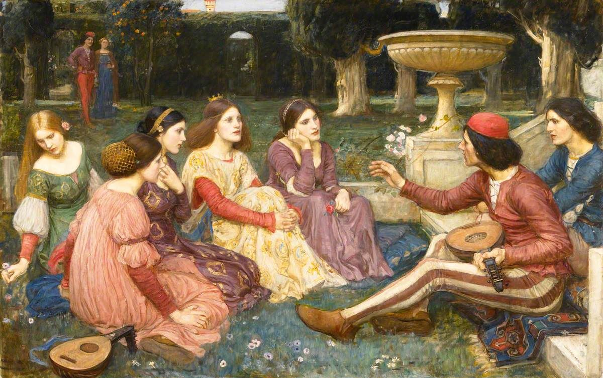

01
01Boccaccio e il Decameron
Un'analisi di due celebri novelle del Decameron: la prima, incentrata sull'ingegno e sul potere della parola; la seconda, sul sacrificio e la nobiltà d'animo.

01 / IL PROGETTO
Introduzione al
progetto.
Questo sito è dedicato a Giovanni Boccaccio e alla sua opera più famosa, il Decameron. Al suo interno viene presentata la vita dell'autore e una panoramica della sua opera, con un approfondimento su due novelle in particolare: Chichibio e la gru e Federigo degli Alberighi.
Per ciascuna novella ho inserito un riassunto della storia, una descrizione dei personaggi principali e una spiegazione dei temi più importanti, utilizzando un linguaggio semplice e diretto per rendere i contenuti facili da comprendere.
03 / L'OPERA
CENTO NOVELLE IN DIECI GIORNATE
Il Decameron.
Il Decameron è la raccolta più famosa di Giovanni Boccaccio ed è composta da cento novelle, raccontate nell'arco di dieci giornate.
La storia inizia nel 1348, quando Firenze viene colpita dalla peste. Per allontanarsi dalla malattia, sette ragazze e tre ragazzi decidono di lasciare la città e rifugiarsi in una villa in campagna. Per trascorrere il tempo, decidono di raccontarsi delle storie: ognuno racconta una novella al giorno, per un totale di dieci racconti al giorno.
Le novelle parlano di situazioni e personaggi diversi, come mercanti, nobili, religiosi e persone comuni. Gli argomenti sono soprattutto l'amore, l'amicizia, l'ingegno, la fortuna e gli scherzi. Alcune storie sono divertenti, altre invece affrontano situazioni più serie e fanno riflettere.
Attraverso questi racconti, Boccaccio descrive la società del suo tempo, mostrando le abitudini, i problemi e i comportamenti delle persone.
100novelle narrate
da dieci giovani
da dieci giovani
04 / LE NOVELLE
Le novelle scelte.
Due racconti del Decameron: uno comico basato sull'ingegno e la battuta pronta, l'altro più serio sul sacrificio e la generosità.

05 / FONTI E RIFERIMENTI
I testi e le fonti.
Per realizzare queste schede ho consultato i testi del Decameron e alcuni approfondimenti didattici online.
- Treccani — Giovanni BoccaccioBiografia, opere e contesto del Decameron
- WeSchool — Chichibio e la gruLezione sulla prima novella
- Aula di Letteratura — Chichibio e la gruAnalisi didattica e spiegazione del testo
- WeSchool — Federigo degli AlberighiLezione sulla seconda novella
- Federigo degli Alberighi (Decameron V, 9): riassunto e testoAnalisi didattica e spiegazione del testo